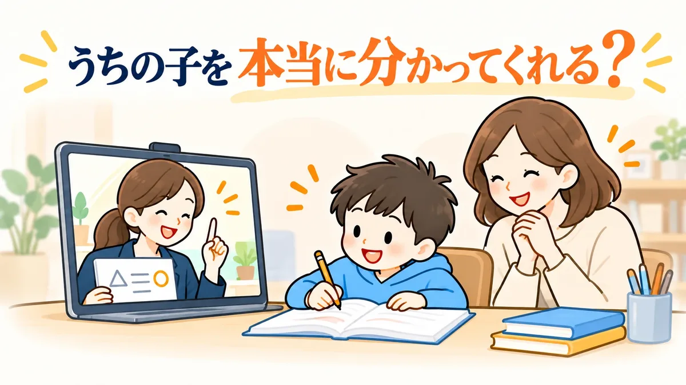

2026年10月最新版
発達障害・
グレーゾーンの子の
オンライン家庭教師
徹底比較6選
- 比べた6社
- 採点6項目
- 全社無料体験・相談
PR当サイトはアフィリエイト広告を利用しており、ソウガクのプロモーションを含みます。順位は広告の有無ではなく、公開している採点基準で決めています。
「発達特性を分かってくれる先生がいい。でも、オンラインで本当に続けられるかは分からない。」
そんな保護者のために、発達障害・グレーゾーンの子に対応したオンライン家庭教師6社の公式サイトを2026年10月14日に確認し、6項目で採点しました。

発達特性に強いオンライン家庭教師BEST3
目的別｜料金プランの例を紹介
横にスクロールできます


※月額は各社公式サイトの料金表による（税込・2026年10月14日確認）。サクシードの月額は1時間3,080円×月4回で当サイトが計算。入会金などは各社の詳細ページへ。写真はイメージです。
6社を6項目で比較
| サービス | 月額の目安 | 編集部のひとこと | 公式 |
|---|---|---|---|
| 1 | ○月13,200円〜 25分から | サービス全体が発達障害・グレーゾーン専門。担当予定の先生と2回の無料体験で相性を確かめられる。
| 公式 |
| 2 | ◎月9,000円〜 30分から | 発達障害コミュニケーション指導者のスタッフが先生を支える。料金は指導した分だけ。
| 公式 |
| 3 | ◎月10,560円〜 30分から | 不登校専門。授業の曜日・時間・回数を固定せず、受けた分だけ後払い。出席扱いの申請にも対応。
| 公式 |
| 4 | ○月12,320円〜 60分から | 専門スタッフが特性を聞き取り、発達支援の指導経験が豊富な先生から選ぶ。
| 公式 |
| 5 | ○月14,960円〜 60分から | 正社員の教育プランナーが専任でつき、WISCの結果をもとに学習計画を立てる。
| 公式 |
| 6 | △月30,690円〜 90分から | 発達障害・グレーゾーン専門。臨床心理士の発達検査と、受験対策が特徴。授業は90分から。
| 公式 |
| サービス | 発達特性への対応 | 先生 | 保護者サポート |
|---|---|---|---|
| ソウガク | ◎5 | ◎5 | ◎5 |
| ランナー | ○4 | ○4 | ○4 |
| ティントル | ○4 | △3 | ○4 |
| サクシード | ○4 | ○4 | ◎5 |
| トライ | ○4 | ○4 | ◎5 |
| コーチング1 | ◎5 | ○4 | ◎5 |
| サービス | 1回の授業 | 入会前の体験 | 料金の目安 |
|---|---|---|---|
| ソウガク | 小学生25分か50分 中高生35分か60分 | 2回（1回目は保護者面談にもできる） | 月13,200円〜 |
| ランナー | 30分単位で組める | 90分の無料体験レッスン | 小学生 月9,000円〜 |
| ティントル | 1コマ30分 | 個別相談会（約1時間）。希望すれば子どもの体験も | 小学生 週1回1時間 月10,560円〜 |
| サクシード | 1時間単位の料金 | オンラインは60分の無料体験授業 | オンライン小学生 1時間3,080円〜 |
| トライ | 1コマ60分（料金例） | 無料の学習面談と、約30分の体験授業（英語か数学） | 小学生 60分×月4回 14,960円〜 |
| コーチング1 | 90分〜 | 体験学習・学習カウンセリング（約120分） | 週1回90分 月30,690円〜 |
※月額の目安は小学生の公式の最安表示（税込）。◎＝11,000円未満、○＝11,000〜14,999円、△＝15,000円以上。数字（5点満点）と星・総合評価の付け方はランキング調査概要に公開しています。各社公式サイトの記載をもとにした当サイト独自の評価です（2026年10月14日確認）。
ひと目でわかる6社の位置
- ✔ 小学生25分から（中高生35分）
- ✔ 専門機関の研修を受けた先生
※縦は各社公式サイトに載っている1回の授業の最短時間（25分〜90分）、横は当サイトの採点「発達特性への対応」と「先生の体制」の合計（基準）。同じ値の会社（サクシードとトライ）は重ならないよう横にずらしています。
ソウガク × ランナー
2社の無料体験で、先生との相性を比べましょう！
発達特性を学んだ先生と、短い授業で試せる
- 担当予定の先生と2回試せる！
体験は入会後に担当する予定の先生が担当。1回目は保護者面談にもできます。 - 小学生は25分から！
集中が続きにくい子向けに、短いコースが用意されています。対象：小学生〜高校生
診断なし・グレーゾーンでも相談OK
無料体験を公式で見る先生の候補が多く、費用を抑えて始められる
- 約14万人の登録から先生を選ぶ！
体験のカルテをもとに本部が10〜20名の候補を選び、面談して決めます。 - 1コマ30分900円から！
指導した分だけの支払いで、欠席した分は差し引かれます。対象：未就学児〜高校生
他社との比較も歓迎と公式に明記
無料体験レッスンを公式で見る※体験・面談はどちらも無料（各社公式サイト、2026年10月14日確認）。同じ日に2社を受ける必要はありません。
発達特性に強いオンライン家庭教師
ランキング
先生との相性は、体験してみないと分かりません。気になる2社ほどの無料体験・相談を受けて比べるのがおすすめです。
1ソウガク
発達特性を学んだ先生が25分から教えてくれる！
担当予定の先生と無料体験2回
診断なし・グレーゾーンでも相談OK
無料体験を公式で見る特徴
- 発達支援の専門機関の研修を受けた社会人講師
- 授業は小学生25分から（中高生は35分から）
- 授業のたびに指導報告。教師・本部とチャットで相談できる
- 無料体験は2回。入会後に担当する予定の先生が体験を担当
- 対象：小学生〜高校生
※編集部の採点（基準はランキング調査概要）。総合評価 4.8
| 料金の目安 | 対応学年 |
|---|---|
| 月13,200円〜小学生25分×月4回・税込。別途入会金22,000円 | 小学生〜高校生全国・オンライン |
| 1回の授業 | 先生 |
| 小学生25分か50分 中高生35分か60分 | 専門機関の研修を受けた社会人講師 |
| 保護者サポート | 無料体験 |
| 毎回の指導報告・教師/本部チャット・保護者向け勉強会 | 2回（1回目は保護者面談にもできる） |
※各社公式サイトの記載（2026年10月14日確認）。
編集部のイチオシポイント
ソウガクは、サービス全体が発達障害・グレーゾーン専門です。先生は発達支援の専門機関「発達凸凹アソシエーション」の研修を受けた社会人講師で、授業は小学生なら25分から選べます。入会後に担当する予定の先生と、2回の無料体験で試してから決められると公式サイトに明記しているのは、6社の中でソウガクだけでした※1。「長い授業は続かないかも」「先生との相性が心配」という家庭が、最初に試しやすいサービスです。
※1 各社公式サイトの無料体験の説明による（2026年10月14日確認）
ソウガクの口コミ
 中学2年生・特別支援学級の保護者
中学2年生・特別支援学級の保護者勉強に苦手意識があり、初回の体験では画面の前に座っているのも難しかった。先生が急がずに時間をかけて関係をつくり、今は授業の時間を楽しみにしている。
- 小学4年生・ADHDの診断ありの保護者
学校へ行ける日が減り、家で勉強を見ると親子で言い合いになっていた。週1回オンラインで学ぶ習慣ができ、「ずっと自分が見なければ」という負担が軽くなった。
※ソウガク公式サイト掲載の声を当サイトで要約。個人の感想です。アイコンはイメージです。
こちら
診断なし・グレーゾーンでも相談OK
無料体験を公式で見る2家庭教師のランナー
勉強が苦手な子専門。発達障害サポートあり
先生は約14万人の登録から本部が選ぶ
他社との比較も歓迎と公式に明記
無料体験レッスンを公式で見る特徴
- 「発達障害コミュニケーション指導者」のスタッフが担当の先生を指導
- 体験で作ったカルテから先生候補を10〜20名選び、面談して決める
- 1コマ30分900円（小中学生）。指導した分だけの支払い
- 分からない問題はLINEで写真を送ると、解説動画で返ってくる
- 対象：未就学児〜高校生
※編集部の採点（基準はランキング調査概要）。総合評価 4.2
| 料金の目安 | 対応学年 |
|---|---|
| 小学生 月9,000円〜教科数・時間・回数で変わる。地域差あり | 未就学児〜高校生オンラインは全国・海外から |
| 1回の授業 | 先生 |
| 30分単位で組める1コマ30分900円〜（高校生1,000円〜） | 約14万人の登録から本部が選考し、指導前に研修 |
| 保護者サポート | 無料体験 |
| 公式LINEで相談・本部から定期的に状況確認 | 90分の無料体験レッスン |
※各社公式サイトの記載（2026年10月14日確認）。
編集部のイチオシポイント
ランナーは「勉強が苦手な子専門」の家庭教師で、その中に発達障害サポートがあります。決まったカリキュラムを置かず、特性に合わせて教え方を変える方針です。料金は1コマ30分900円（小中学生）からで、指導した分だけの支払い。約14万人の登録から本部が先生を選び、合わなければ何度でも無料で交代できるので、先生選びを丁寧にしたい家庭に向いています。
ランナーの口コミ
- 会員の保護者（公式サイト掲載）
息子は対面が苦手で、オンラインを強く希望した。始めてみると対面と変わらず、分からないところは何度も教えてもらえた。
- 会員の保護者（公式サイト掲載）
先生が、親からの勉強の相談にも丁寧にのってくれた。
※ランナー公式サイト掲載の声を当サイトで要約。個人の感想です。アイコンはイメージです。
こちら
他社との比較も歓迎と公式に明記
無料体験レッスンを公式で見る3ティントル
学校に行きづらい子の専門オンライン個別指導
30分単位、受けた分だけの後払い
まずは個別相談会から
個別相談会を公式で見る特徴
- 不登校専門。発達障がい・支援級・行き渋りの子も対象
- 1コマ30分、受けた分だけの後払い。曜日・回数は自由
- 講師とは別に、不登校心理相談士の資格を持つスタッフが家庭を支える
- 自宅学習を学校の出席扱いとして申請できるコースあり
- 対象：小学生〜高校生
※編集部の採点（基準はランキング調査概要）。総合評価 4.2
| 料金の目安 | 対応学年 |
|---|---|
| 小学生 週1回1時間 月10,560円〜4週換算・税込（Cランクの講師） | 小学生〜高校生全国・オンライン |
| 1回の授業 | 先生 |
| 1コマ30分曜日・時間・回数は自由 | 現役の大学生（講師研修・不登校対応の研修あり） |
| 保護者サポート | 無料体験 |
| 不登校心理相談士がオンライン面談・LINE・電話で相談 | 個別相談会（約1時間）。希望すれば子どもの体験も |
※各社公式サイトの記載（2026年10月14日確認）。
編集部のイチオシポイント
ティントルは不登校専門のオンライン個別指導で、発達障がいや支援級、行き渋りの子も対象にしています。授業は1コマ30分単位で、曜日・時間・回数を固定しません。「慣れるまでは少なめに、しんどい日は休む」という使い方ができるので、学校に行きづらい日が続いている家庭に向いています。先生は現役の大学生です。
ティントルの口コミ
- 中学2年生の保護者（公式サイト掲載）
先生のおかげで、勉強への意欲が少しずつ出てきた。宿題を出してもらえるのも親としてありがたい。
- 個別相談会に参加した保護者（公式サイト掲載）
子どもの困りごとを理解して無理のない提案をしてもらえたが、本人のやる気がいまひとつで、入会はいったん見送った。
※ティントル公式サイト掲載の声を当サイトで要約。個人の感想です。アイコンはイメージです。
こちら
まずは個別相談会から
個別相談会を公式で見る4家庭教師のサクシード
LD・ADHD・ASDサポートコースあり
オンラインは毎回の報告と月1回の保護者面談
無料体験は通常と同じ60分
無料体験授業を公式で見る特徴
- 専門スタッフが親子と面談して特性を聞き取る
- 発達支援の指導経験が豊富な先生から選抜
- オンラインは毎回の授業報告＋月1回の保護者面談
- 先生の交代は何度でも無料。退会費・違約金なし
- 対象：小学生〜高校生
※編集部の採点（基準はランキング調査概要）。総合評価 4.0
| 料金の目安 | 対応学年 |
|---|---|
| オンライン小学生 1時間3,080円〜税込。月4回なら12,320円〜（当サイト計算） | 小学生〜高校生オンラインは全国・海外から |
| 1回の授業 | 先生 |
| 1時間単位の料金1コマの時間・回数で見積もり | 発達支援の指導経験が豊富な先生から選抜 |
| 保護者サポート | 無料体験 |
| 毎回の授業報告・月1回の保護者面談 | オンラインは60分の無料体験授業 |
※各社公式サイトの記載（2026年10月14日確認）。
編集部のイチオシポイント
サクシードには、LD・ADHD・ASDサポートコースがあります。専門スタッフが親子と面談して特性を聞き取り、発達支援の指導経験が豊富な先生から担当を選ぶ方針です。オンライン家庭教師では、毎回の授業報告に加えて月に1回の保護者面談があります。授業の様子を定期的に聞きながら進めたい家庭に合います。
サクシードの口コミ
- 読み書きに苦手がある子の保護者（公式サイト掲載）
学習障がいにも対応していると知って選んだ。先生が「楽しく学ぶ」環境をつくってくれて、いつも部屋から笑い声が聞こえていた。
- 中学2年生の保護者（公式サイト掲載）
オンライン授業をきっかけに、少しずつ前向きな姿勢が戻ってきた。今は自分から机に向かうようになった。
※サクシード公式サイト掲載の声を当サイトで要約。個人の感想です。アイコンはイメージです。
こちら
無料体験は通常と同じ60分
無料体験授業を公式で見る5トライのオンライン個別指導塾
発達特性サポートコースあり
WISC検査の結果をもとに学習をサポート
学習面談は入会しなくても受けられる
無料の学習面談を公式で見る特徴
- 教師とは別に、正社員の教育プランナーが専任でつく
- WISC検査の結果をもとに、得意を伸ばし苦手をカバー
- 保護者の同席・カメラオフでの受講もできる
- 学習管理アプリで、毎回の授業の進捗が見える
- 対象：小学生〜高校生
※編集部の採点（基準はランキング調査概要）。総合評価 4.0
| 料金の目安 | 対応学年 |
|---|---|
| 小学生 60分×月4回 14,960円〜税込。別途入会金11,000円 | 小学生〜高校生高卒生も相談可 |
| 1回の授業 | 先生 |
| 1コマ60分（料金例）時間・回数・教科は変更できる | 33万人の登録教師から選ぶ。専任制で原則同じ教師 |
| 保護者サポート | 無料体験 |
| 教育プランナーの定期面談・電話・LINE、学習管理アプリ | 無料の学習面談と、約30分の体験授業（英語か数学） |
※各社公式サイトの記載（2026年10月14日確認）。
編集部のイチオシポイント
トライのオンライン個別指導塾には発達特性サポートコースがあり、WISC検査の結果をもとに学習を組み立てます。教師とは別に正社員の教育プランナーが専任でつき、定期的な面談や電話・LINEで相談できます。検査結果をどう勉強に活かせばいいか迷っている家庭に向いています。
こちら
学習面談は入会しなくても受けられる
無料の学習面談を公式で見る6家庭教師のコーチング1
発達障害・グレーゾーン専門の家庭教師
発達特性のある子の中学・高校受験に対応
無料の体験学習・学習カウンセリングあり
無料体験を公式で見る特徴
- 提携する臨床心理士の発達検査を受けられる
- 発達特性のある子の中学受験・高校受験に対応
- 独自の研修を受けた先生が担当。毎回の指導報告書
- 授業以外のことも教務部に相談できる
- 対象：小学1年生〜高校3年生
※編集部の採点（基準はランキング調査概要）。総合評価 3.5
| 料金の目安 | 対応学年 |
|---|---|
| 週1回90分 月30,690円〜税込。別途入会金18,700円・年会費 | 小学1年生〜高校3年生オンラインは全国から |
| 1回の授業 | 先生 |
| 90分〜回数・時間は目的に合わせて相談 | 独自の研修を受けた先生 |
| 保護者サポート | 無料体験 |
| 毎回の指導報告書・教務部に相談 | 体験学習・学習カウンセリング（約120分） |
※各社公式サイトの記載（2026年10月14日確認）。
※すべて税込。交通費は訪問の場合のみ実費。出典：コーチング1公式サイト（2026年10月14日確認）
編集部のイチオシポイント
コーチング1は、発達障害・グレーゾーン専門の家庭教師です。提携する臨床心理士の発達検査を受けられること、発達特性のある子の中学受験・高校受験に対応していることが、6社の中でも目立つ特徴です。授業は1回90分からで料金は6社で最も高めですが、受験まで見据えて専門の家庭教師に任せたい家庭には候補になります。
こちら
無料の体験学習・学習カウンセリングあり
無料体験を公式で見る迷ったらまずは
ここで相談すれば安心！
※診断は各社公式サイトの記載（2026年10月14日確認）をもとに当サイトが判定したもので、合う・合わないを保証するものではありません。入力した内容は送信・保存しません。